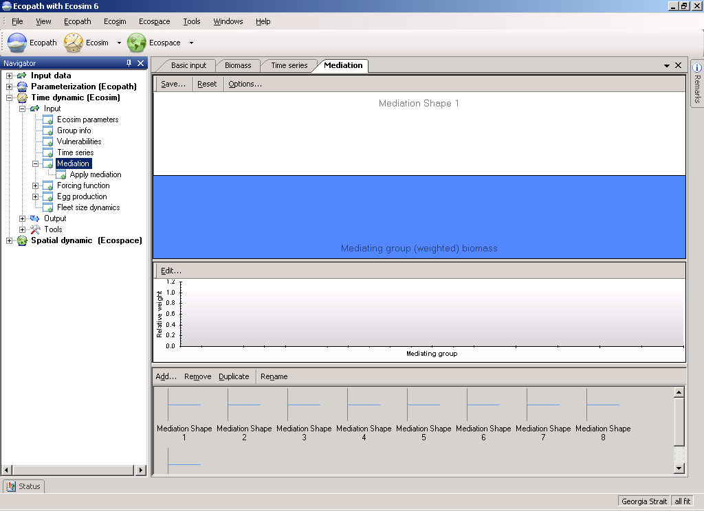
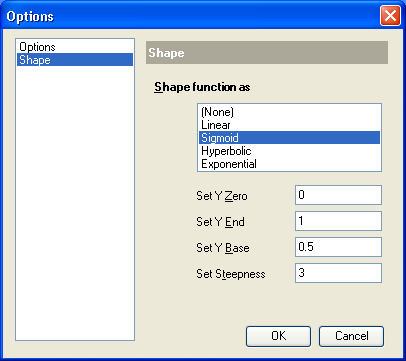
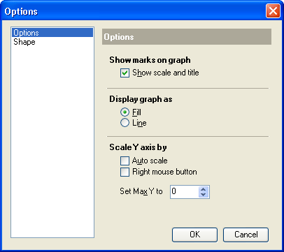
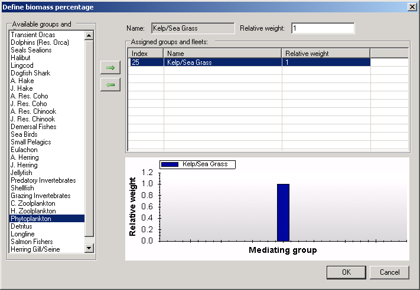
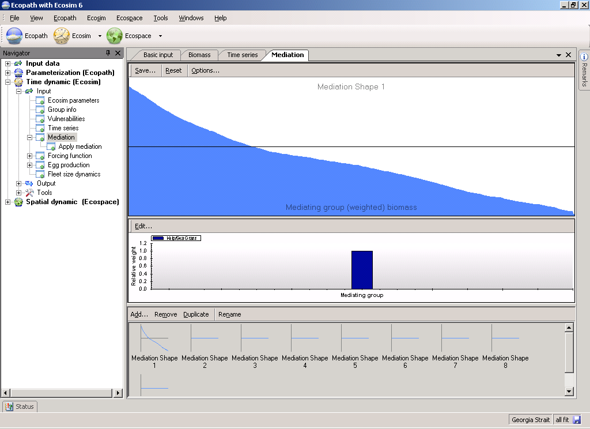

It is not uncommon for some third type of organism (i.e., mediating organism) to affect the feeding rate of one type of organism j on another i. At least two types of effects are possible:
Protection: the third organism provides protection for prey type i when the third organism is more abundant. For example, juvenile fishes (as type i prey) may use corals, macrophytes, and/or sponges for protection from predators, and fishing may directly impact these ‘cover’ types. K. Sainsbury (pers. comm.) has emphasized the possible importance of this effect for evaluating impact of trawling on the Northwest Shelf of Australia. For another example, increases in phytoplankton may reduce water clarity and hence search efficiency of visual predators on small fishes, which would tend to reinforce the ‘cascade effect’ of increasing abundance of small fishes causing reduced zooplankton abundance and hence increased phytoplankton abundance.
Each trophic mediation function is defined in the following steps:
Sketching a function that increases with increasing X represents facilitation effects (prey more vulnerable when X is large), while sketching a function that decreases with X represents protection effects (prey less vulnerable when X is large). The idea behind making X a weighted sum of third organism biomasses is to:
The sketch function approach allows considerable flexibility in specifying the form of the relationship between third organisms and trophic vulnerabilities. Such effects are essentially statistical, and cannot usually be described by any simple functional form. Effects may only occur above/below some threshold abundances, may or may not be large even when third organism abundances are very low, etc.
To avoid unnecessary parameter specification, the functions are automatically scaled relative to Ecopath baseline inputs: the X axis of each function is scaled relative to the weighted initial sum of third organism biomasses, and the function is internally scaled so that Y=1.0 when X = Ecopath initial weighted sum. The only restriction on the form of the function is that the user must not specify a relative Y value of 0.0 when X = Ecopath base value.
Internally, the Ecosim routines use the trophic mediation functions to modify prey vulnerabilities vij in the basic trophic flow equations. At each simulation time step, any i,j flow that has been defined to be affected by a mediation function is modified to use an effective vi,j = vi,j base · Y/Yo, where Y is the current value of the mediation function, which depends on the current X of that function, and Yo is the value of the function when X = Ecopath base weighted sum of mediating biomasses.
Using the trophic mediation form
To implement trophic mediation in Ecosim, open the Mediation form (Time dynamic (Ecosim) > Input > Mediation; see Figure 8.9). Note you must have an Ecosim scenario loaded before you can use the Mediation form. There are three steps to the process:
1. Define trophic mediation shapes;
2. Define and edit relative weight of impacting groups; and
3. Apply trophic mediation shapes to predator-prey interactions.
Details of each step are given below.
When you open the Mediation form for the first time, you will see nine ‘blank’ mediation shapes with default value of 0.5. To define a mediation shape, first select one of these blank shapes. You can then define trophic mediation shapes in one of two ways:
Shapes can be drawn freehand using the blue sketch pad. You will see your sketched shape transferred to the thumbnail in the bottom pane;
Alternatively, you can use standard mathematical shapes. Click Options… at the top of the Mediation form to open the Options dialogue box. Select Shape from the menu on the left of the dialogue box (Figure 8.10a) to see a list of standard shapes (e.g., linear, sigmoid, exponential, ...). You can tailor the shape to your specific requirements by setting the Y Zero, Y End, Y Base and Steepness parameters (where appropriate) in the cells provided. Select Options from the menu on the left of the dialogue box for display settings (Figure 8.10b).
Clicking the Reset button at the top of the Mediation form resets the current trophic mediation shape to the default value of 1.0.
Clicking the Save… button at the top of the Mediation form opens a dialogue box prompting you to save the current trophic mediation shape to a bitmap file (.bmp). Use this dialogue box to name the file and browse for a location to save it.
There are four additional menu items on the bottom pane of the Forcing function form that allow you add, copy, rename and delete forcing or seasonal shapes.
Adds an extra blank mediation shape.
Copies the currently-selected mediation shape.
Removes the currently-selected mediation shape.
Rename the currently-selected mediation shape by selecting Rename. You will then be able to type in a new name for the shape.
The Edit relative weight (Edit…) button is found in the middle of the Mediation form just above the Relative weight graph (see Figure 8.9). As discussed above, the relative weightings are used to assign a weighted sum of third organism biomasses to the X axis of each trophic mediation function to represent several different groups having the same trophic mediation effect but to different degrees. Note that third-party groups can be functional groups of organisms (Ecopath groups) or fishing fleets.
Assign relative weightings in the following steps:
1. First, you must select a Mediation shape from the set of mediation shapes at the bottom of the Mediation form. Once you have selected the desired mediation shape, click the Edit… button to open a form to assign relative weightings by group for that particular mediation shape (Define biomass percentage form; Figure 8.11).
2. On the Define biomass percentage form, select third-party groups/fleets from the menu on the left and move them to the Assigned groups and fleets table using the green arrow.
3. For each third-party group, assign a relative weighting using the Relative weight box at the top of the form. To illustrate this: if you believe three of your model groups (Group 3, Group 4 and Group 5) act as third-party groups by facilitating a particular predator-prey interaction (represented by Mediation Shape 1), and you enter 2 for Group 3, 1 for Group 4, and 0.5 for Group 5, the biomasses on the X-axis of Mediation Shape 1 will be weighted as 2 · B3 + 1 · B4 + 0.5 · B5.
4. When you have finished assigning relative weightings, click OK.
Relative weights for each group will now be displayed as a bar graph on the lower panel of the Mediation form, with Ecopath Groups on the X-axis and Relative weight on the Y-axis (Figure 8.12).

Figure 8.9


Figure 8.10a & b

Figure 8.11.

Figure 8.12
After you have defined the mediation shapes continue to the Apply mediation form to define the predator-prey relationships that each of the mediation functions impact. This step is essential as your trophic mediation functions cannot be applied without it.